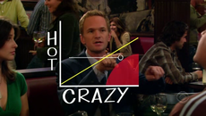

.jpg) No Touch
No Touch
In a jury trial, a Chewbacca defense is a legal strategy in which a criminal defense lawyer tries to confuse the jury rather than refute the case of the prosecutor. It is an intentional distraction or obfuscation. As a Chewbacca defense distracts and misleads, it is an example of a red herring. It is also an example of an irrelevant conclusion, a type of informal fallacy in which one making an argument fails to address the issue in question.[1][2] Often an opposing counsel can legally object to such arguments by declaring them irrelevant, character evidence, or argumentative. The name Chewbacca defense comes from "Chef Aid", an episode of the American animated series South Park. The episode, which premiered on October 7, 1998, satirizes the O. J. Simpson murder trial, particularly attorney Johnnie Cochran's closing argument for the defense. In the episode, Cochran bases his argument on a false premise about the 1983 film Return of the Jedi. He asks the jury why a Wookiee like Chewbacca would want to live on Endor with the much smaller Ewoks when "it does not make sense". He argues that if Chewbacca living on Endor does not make sense—and if even mentioning Chewbacca in the case does not make sense—then the jury must acquit. In the Simpson murder trial, the real Johnnie Cochran tried to convince jurors that a glove found at the crime scene, alleged to have been left by the killer, could not be Simpson's because it did not fit Simpson's hand. Because the prosecution relied on the glove as evidence of Simpson's presence at the scene, Cochran argued that the lack of fit proved Simpson's innocence: "It makes no sense; it doesn't fit; if it doesn't fit, you must acquit." "If it doesn't fit, you must acquit" was a refrain that Cochran also used in response to other points of the case.
in: One Time Gags, Barney's theories, Theories Hot/Crazy Scale 4 VIEW SOURCE The Hot/Crazy Scale is a graph used to display someone's hot-to-crazy ratio. As Barney explains in How I Met Everyone Else, a person is allowed to be crazy, as long as they are equally hot. Ideally, you want your date to be above the diagonal line, indicating that they are hotter than they are crazy. There does appear to be some bias however, as shown by Barney's diagram, which indicates that someone who is the maximum level of crazy does not have to be the maximum level of hot in order to be equal to/above the diagonal line. The diagonal line is known as the Vicky Mendoza Diagonal by Barney, after a girl he dated who jumped back and forth across the line by shaving her head, then losing ten pounds, then stabbing Barney with a fork and finally getting a boob job. Hot-crazy scale.png The bottom-right corner of the scale is dubbed the Shelly Gillespie zone by Barney, after another girl he dated who fell into that area after gaining twenty pounds and trying to kill him with a brick. Barney explains the Hot-Crazy scale to the gang after Ted introduces them to Blah Blah, his crazy girlfriend at the time. 
We are all familiar with the common proverb “Curiosity killed the cat,” but what was the origin of that proverb, and did it really intend to suppress curiosity?
Interestingly, the original version was “care killed the cat,” with the word “care” referring to grief or worry. In this form, the proverb first appeared in print at the end of the sixteenth century, first in a play by playwright Ben Johnson (in 1598), and about a year later in Shakespeare’s Much Ado About Nothing. It was still quoted in this form at the end of the nineteenth century, in Brewer’s Dictionary of Phrase and Fable. So what happened? How did “care” get replaced by “curiosity?”
As far as I can tell, nobody knows. The first known printed reference to this version was in an Irish newspaper in 1868, and it started appearing more frequently as a proverb in 1873. Be that as it may, there is no question that the cautionary expression meant to serve as advice suggesting that it is best to mind one’s own business.
No Touch